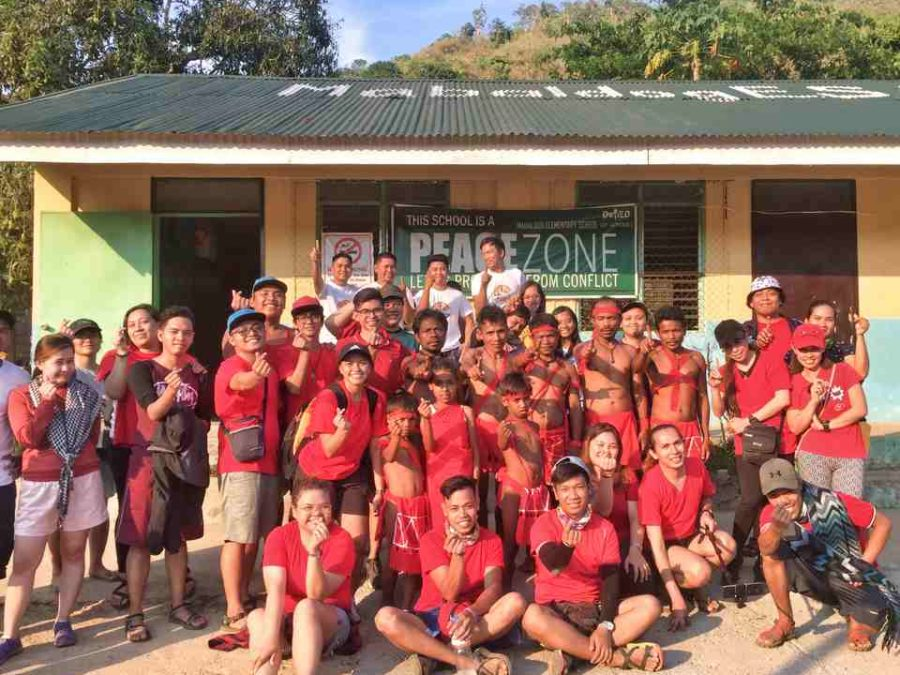

Summary
The Dumagats, an indigenous tribe in Tanay, Rizal, Philippines, are known for their unique culture and customs. Despite their remoteness, they face challenges like poverty, lack of learning, and cultural discrimination. Over the years, the supreme belief in the Dumagats' traditional hunting, fishing, and agricultural methods has been rooted in their ancestral land and environment. However, fear of displacement has resulted in government-led development projects, such as mega-dam building
Over a thousand years ago, the term "Dumagat" refers to the ancient people who settled in Manila Bay, also known as the Sinaunang Tagalog from Eastern Luzon.The Dumagats, a unique community in Tanay, Rizal, have faced challenges like poverty and threats to their ancestral land. Despite these, they maintain their culture, beliefs, and way of life, with the Dumagat youth actively preserving their cultural knowledge and sharing experiences.
The Dumagat Remontado, an indigenous community in Rizal Province, Philippines, are descendants of lowlanders who fled Spanish colonizers and settled in the mountains. The name Remontado derives from the Spanish word for flee, reflecting their mixed-blooded heritage and strong ties to their ancestral land.The dumagat is located in Sitios Magata and Manggahan, situated at the foot of the Sierra Madre mountain range, were disconnected from the Philippines' power grid due to their remote location and potential flooding threat.
The Dumagat people in Tanay, Rizal, have a rich cultural heritage, characterized by their traditional clothing and body decoration practices. Women wear a tapis, men wear bahag, and breastfeeding mothers wear uban. These practices reflect the deep-rooted traditions of the Dumagat people, preserving their identity and showcasing their unique sartorial and decorative practices.
Hatang Kayey, Sinauna, and Remontado Dumagat are the languages spoken by the Dumagat tribe, a group known for their rich cultural heritage and rituals, such as the rain ritual, which is a testament to their connection with nature and land.
Conclusion
The Dumagats, an indigenous tribe in Tanay, Rizal, Philippines, embody a community with a rich cultural heritage and traditional practices. Despite facing obstacles such as poverty, limited educational opportunities, and cultural discrimination, the Dumagats hold steadfast to their traditional hunting, fishing, and agricultural methods rooted in their ancestral land. However, the looming threat of displacement due to government-ledprojects like mega-dam building casts a shadow over their way of life.